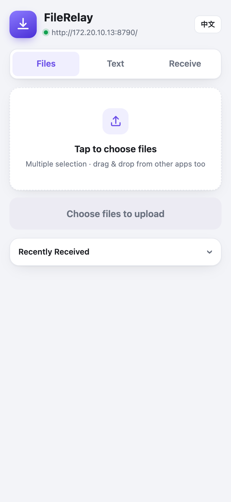

FileRelay · Direct Transfer for Every Device on Your Network
Move files and text both ways between your phone and computer over local Wi-Fi: peer-to-peer, no cable, no cloud drive, no external server. A Mac, Windows or Linux machine acts as the host; any device with a browser is a guest.
Roles and Concepts
The whole system has exactly two roles — this one section is all you need to get started:
| Role | Who | What it does |
|---|---|---|
| Host runs the service |
A Mac with the app installed, or a Windows / Linux machine running start.bat / start.sh |
Serves a LAN page; receives files into the inbox; puts outgoing items in the outbox for the guest to pick up |
| Guest opens the web page |
Any device with a browser: Android / iOS phone, tablet, another computer. Nothing to install | Opens the host's address in a browser: uploads files, sends text; picks up whatever the host put in the outbox |
Guest → Host guest browser ──upload / paste──▶ receive service ──▶ inbox ~/Downloads/android-inbox
Host → Guest host puts items in outbox ──wait for pickup──▶ guest taps "Download" / "Copy"All traffic stays on the local network — nothing leaves your router, no sign-up, no login. The host name, platform and paths shown on the page are read live from the server: whether the host is a Mac, Windows or Linux, the wording follows automatically.
Quick Start
Step 1: Start the host
| Platform | How | Notes |
|---|---|---|
| macOS | Double-click the app (FileRelay.app) | Lives in the menu bar (a small colorful tile icon), not the Dock. The background service starts with it |
| Windows | Double-click start.bat |
Finds py -3 or python automatically (Python 3.8+; tick Add Python to PATH when installing). Closing the window stops the service |
| Linux / macOS terminal | ./start.sh |
Finds python3 (3.8+) automatically. Runs in the foreground; Ctrl+C to stop |
The startup banner prints two addresses: the local console (http://127.0.0.1:port/) and the LAN address for other devices. The default port is 8765; if taken, it rolls forward automatically — the banner and runtime info are always authoritative.
Step 2: Connect a guest
- Show the QR code on the host: on a Mac, click the menu bar icon → "Show QR Code"; on any platform, the local console has the same button.
- Put the phone on the same Wi-Fi, scan the code with the camera, and the transfer page opens in the browser.
- Another computer as guest? Just open the LAN address from the banner in its browser — same experience as a phone.
Host Side: The Local Console (all platforms)
Open http://127.0.0.1:port/ in the host's own browser and the page switches to the console view — the host's control desk:
- Inbox / Outbox twin columns: see what arrived on the left (one click opens the folder), manage outgoing on the right. The outbox column has a drop zone — dropping a file in = sending it — plus a "beam clipboard text" button that sends the host's current clipboard to the guest.
- Two clipboard toggles (bottom of the page): "let the other side read this clipboard" and "auto-write received text". Changes apply instantly, no restart.
- Show QR Code / User Guide (this document) / Quit service.

127.0.0.1-style loopback addresses — other devices (including another computer on the same Wi-Fi) visiting the LAN address see the ordinary transfer page and can neither open the console nor reach local actions like "Quit service" or "Open folder". A second computer on the LAN that wants to transfer files just uses the transfer page: upload, text, inbox and outbox all work there too.
Host Side: The Menu Bar (macOS only)
The Mac build adds a menu bar, so high-frequency actions don't need a browser:
| Menu item | What it does |
|---|---|
| Show QR Code | Native window with the QR code + current LAN address. Refreshes automatically when the Wi-Fi changes |
| Send Clipboard Text to Phone | Queues the Mac clipboard text in the outbox; it appears on the guest's page after refresh |
| Send Files to Phone… | File picker (multi-select); chosen files show up in the guest's receive list |
| Open Outbox Folder | Opens the outbox directory. Dropping a file in = sending it — you don't even need the menu |
| Clear Outbox… | Removes items not yet picked up. Copies already downloaded by the guest are unaffected |
| N pending · Guest online/offline | At a glance: how many items are waiting and whether the guest's page is currently connected |
| Open Inbox Folder | Opens the inbox in Finder |
| Copy Receiving Address | Copies the current address to the clipboard for sharing |
| Last received | Shows the last received item and time, auto-refreshing every 2 seconds |
| Auto-write received text | On by default. Text from the guest goes straight into the Mac clipboard — copy on the phone, Cmd+V on the Mac |
| Let guest read this clipboard | Off by default. When enabled, the "Host clipboard" panel on the guest page can fetch it (equivalent to the console toggle; either one works) |
| Service port | Shows the actual port in use. Default 8765; rolls forward when taken — see here which one won |
| User Guide / Quit | Opens this guide / quits the app and stops the background service |
What the Guest Can Do
Upload files
- "Choose files" accepts multiple files at once — images, videos, documents, archives, anything; you can also drag files in from other apps.
- Each file gets its own progress bar. Files keep their original names, are never renamed or compressed, and duplicates get a sequence number automatically.

Send text
- The input box on the "Send text" tab: long-press → paste and it's on the host instantly; or just type — URLs, verification codes, addresses.
Pick up what the host sent
The "Receive" tab (its label shows the host's actual name) lists everything waiting in the outbox; a red badge shows the number of uncollected items.
- Download a file: tap "Download" on an entry (or the row itself) — it goes to the device's download folder.
- Download all: many items? Tap "Download zip" to grab everything at once.
- View / copy text: tap "View" to expand a text entry, then "Copy all" to paste it anywhere.
- Finish & clear: once everything is saved, tap "Got it — clear" to delete the queued copies on the host (whatever the guest already downloaded is unaffected).
Read the host's current clipboard
The outbox is "things the host deliberately sent, waiting in a queue". The clipboard is what the host is holding right now — so it never enters the queue and is never stored: one tap, one fetch.
- The host allows it first: on a Mac use the menu bar, on other platforms the toggle at the bottom of the console — enable "Let the other side read this clipboard".
- On the guest, go to the receive tab; the top panel is "Host clipboard" (labelled with the host's actual name).
- Tap "Read" — the host's current clipboard text appears below; "Copy" puts it in your own clipboard.
- This panel reports the toggle state honestly: before the host allows it, it says so and tells you where to enable it; after, it shows "allowed".
- What's read is only shown on the page — nothing is written to disk, nothing enters the queue. One-shot, no files left behind.
Where Things Land
- Inbox
~/Downloads/android-inbox(on Windows:%USERPROFILE%\Downloads\…; if the Downloads folder is redirected by OneDrive or similar, trust the actual path printed in the startup banner)- Received files
- Saved under their original names; duplicates get a sequence number (
photo(1).jpg), never overwritten - Received text
- Appended to
clipboard.login the inbox with timestamped separators; also written to the host clipboard depending on the toggle. Only the last 200 entries are kept — older ones are dropped automatically. Transferred text often contains codes and passwords that shouldn't live on disk forever. The host can wipe it anytime via "Clear text log" on the console or in the menu bar - State file
__last.jsonin the inbox, used by the menu bar / console to show "last received" — safe to ignore- Outbox
~/Downloads/android-outbox. Everything to be sent waits here for the guest to pick up; removed when the guest taps "Got it — clear", or automatically after 24 hours unclaimed. Queue cap: 200 items- Flag files
~/.androidtransfer/flags/— state of the two clipboard toggles, safe to ignore- Runtime info
~/.androidtransfer/runtime— actual port, PID and address. Deleted automatically when the service exits, safe to ignore
Troubleshooting
| Symptom | Cause & fix |
|---|---|
| Guest can't open the page | Check in order: ① both ends on the same Wi-Fi (not one on 5G and the other on a guest network); ② router doesn't have "AP isolation / client isolation" enabled; ③ the host firewall isn't blocking incoming connections (on Windows, the first-run firewall prompt must be answered with "Allow access" — after "Cancel", 127.0.0.1 still works so it looks fine, but the LAN is completely cut off) |
| "Port in use" / port isn't 8765 | Nothing to do. The service rolls forward to the next free port (8765 → 8766 → …); the banner, QR code and "Copy Receiving Address" all use the actual port. Fully functional either way |
| macOS: "damaged" or "unidentified developer" on first launch | Apps downloaded over the network get quarantined. Run once:xattr -dr com.apple.quarantine "/Applications/FileRelay.app" |
| macOS: Finder still shows the old icon | Stale icon cache. Run killall Finder, or drag the app to the desktop and back |
| No system notifications | macOS: System Settings → Notifications, find the app, allow notifications. Linux: make sure notify-send is installed (most distros ship it). Windows: some stripped-down builds don't show toasts — transfers are unaffected |
| Can't find received files | Trust the actual inbox path printed in the startup banner — on systems where Downloads is redirected (OneDrive etc.), the service automatically tries fallback locations |
| Outbox items never disappear | Normal — they're waiting for pickup. Removed as soon as the guest taps "Got it — clear"; otherwise auto-cleaned after 24 hours (cap 200 items). You can also clear manually anytime |
| Text was sent but not on the host clipboard | Check the "Auto-write received text" toggle (menu bar on a Mac, console footer elsewhere; ticked = on). Even when off, text is still logged to clipboard.log (last 200 kept) — it just doesn't reach the clipboard |
| Guest taps "Read" and is told it's not allowed | This toggle is off by default and must be enabled at the host first (see "Read the host's current clipboard"). Then tap "Read" again — no restart needed |
| "Read" says the clipboard is empty | Honest answer — the host's clipboard genuinely has no text right now. If it holds an image or file, this app only handles text, so it reports empty |
| Android warns "file might be harmful" when downloading | Routine Chrome warning for downloads over non-HTTPS. Choose "Download anyway" — a self-hosted LAN service can't get a trusted certificate, so this prompt is unavoidable |
| "Copy all" does nothing | Browsers block the modern clipboard API on non-HTTPS pages, so the app falls back to a compatibility path; if that's blocked too, the button changes to "long-press the text above to copy manually" |
| Address stopped working after switching Wi-Fi | Normal. Reopen the QR code — it always reads the current address |
How the Port Is Chosen
- Tries the preferred port first (default
8765). - If taken, tries
8766,8767… up to 20 more, and binds the first one that actually works. - Writes the actual port to
~/.androidtransfer/runtime; the QR code and every address use it. - The file is removed automatically when the service exits, so a stale port never misleads the next launch.
Advanced Settings
Change port or folders (environment variables, all platforms)
PORT=9000 ./start.sh # preferred port; rolls forward if taken
PORT_SPAN=5 ./start.sh # limit the roll-forward range (8765–8769 only)
INBOX=… OUTBOX=… ./start.sh # custom inbox / outbox directories
OUTBOX_TTL=86400 OUTBOX_MAX=200 ./start.sh # outbox retention seconds / queue capOn Windows use set PORT=9000 (or PowerShell's $env:PORT=9000) before running start.bat. In the Mac .app these values live in the launcher Contents/MacOS/AndroidTransfer — right-click → Show Package Contents to edit.
Enable an access token
TOKEN=auto ./start.sh # generates a token on first run and remembers itBy default any device on the same Wi-Fi can upload. With a token enabled, the QR code and "Copy Receiving Address" automatically include ?token=…, so guests just scan — no manual typing. The outbox read and download endpoints are token-protected too.
Launch at login
- macOS:
System Settings → General → Login Items, click "+" and add the app. - Windows:
Win+R→shell:startup, put a shortcut tostart.batthere. - Linux: add
start.shin your desktop environment's autostart settings, or write a systemd user unit the usual way.
Multiple Hosts
Just run one instance per computer — two machines can both use port 8765, because their IPs differ:
- Each host has its own QR code; scanning a host sends to that host — the "which machine?" question answers itself.
- No interference; each inbox is local to its own machine.
- Port conflicts only happen within one machine, never across machines.
Security Notes
- The service only listens on the LAN — no port forwarding, no exposure to the internet.
- On public Wi-Fi (cafés, hotels), enable the
TOKENaccess token so strangers on the same segment can't upload files or read your outbox. - The local console only activates for
127.0.0.1— actions like "open folder" or "quit service" cannot be invoked by other devices on the LAN. - "Let the other side read this clipboard" is off by default: clipboards often hold passwords and codes. Enable it only when you actually need it.
- Conversely, text sent by guests is auto-written into the host clipboard by default (so you can paste right away). If that might clobber your own copy, switch "Auto-write received text" off.
- Quit when done (menu bar "Quit" on a Mac; close the window /
Ctrl+C/ console "Quit service" elsewhere) — the service stops and leaves no background processes.
Uninstall
- Stop the service first: menu bar "Quit" on a Mac; close the
start.batwindow on Windows;Ctrl+Con Linux. - macOS: drag the app from
/Applicationsto the Trash. Windows / Linux: delete the project folder. - If you no longer need received files, delete the inbox and outbox too (
~/Downloads/android-inbox,~/Downloads/android-outbox). - Optional: remove
~/.androidtransfer(runtime info and toggle flags).